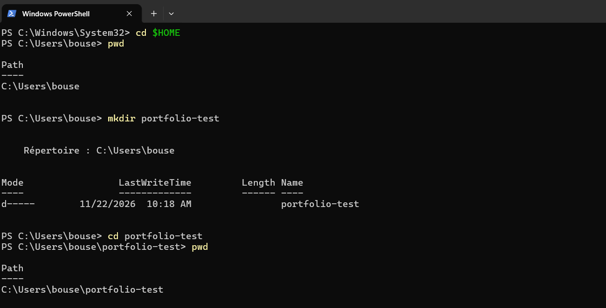
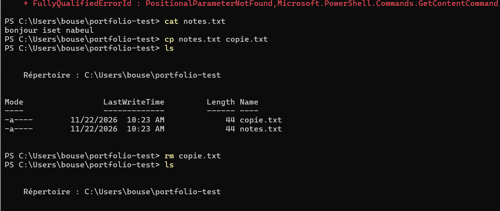
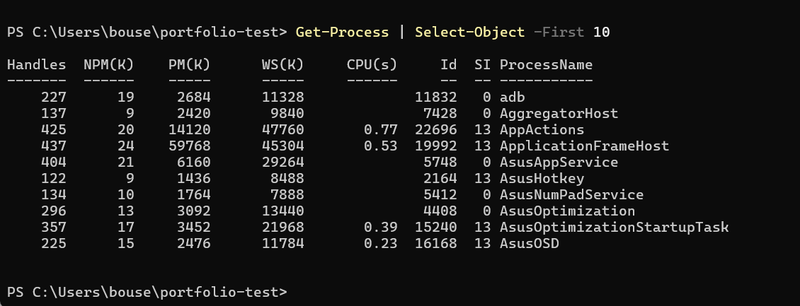

Systèmes d'exploitation
Le rôle d'un système d'exploitation
Le système d'exploitation est l'intermédiaire entre l'utilisateur, ses applications et le matériel de l'ordinateur. Il a quatre grands rôles.
Il partage le processeur entre les programmes qui tournent en même temps.
Il donne à chaque programme une place dans la RAM, puis la récupère.
Il organise les fichiers et les dossiers sur le disque.
Il fait communiquer l'ordinateur avec le clavier, l'écran, l'imprimante… grâce aux pilotes.
Windows, Linux et macOS
| Critère | Windows | Linux | macOS |
|---|---|---|---|
| Créé par | Microsoft | Une communauté de développeurs (ex. : Ubuntu) | Apple |
| Prix | Payant (souvent inclus avec le PC) | Gratuit | Inclus avec les ordinateurs Apple |
| Code source | Fermé | Ouvert (open source) | Fermé |
| Ordinateurs | La plupart des PC | Presque tous les ordinateurs et la majorité des serveurs | Seulement les Mac |
| Terminal | PowerShell | Bash | Zsh |
| Usages | Bureautique, jeux, entreprises | Serveurs, développement, cybersécurité | Graphisme, vidéo, applications Apple |
Mini-tutoriel : les commandes essentielles dans PowerShell
Dans PowerShell, les commandes Linux de base fonctionnent aussi : ce sont des alias, c'est-à-dire des raccourcis vers les vraies commandes PowerShell.
| Commande | Ce qu'elle fait | Vraie commande PowerShell |
|---|---|---|
pwd | Affiche le dossier où je suis | Get-Location |
ls | Liste le contenu du dossier | Get-ChildItem |
mkdir nom | Crée un dossier | New-Item -ItemType Directory |
cd nom | Entre dans un dossier (cd .. pour remonter) | Set-Location |
cat fichier | Affiche le contenu d'un fichier | Get-Content |
cp a b | Copie un fichier | Copy-Item |
rm fichier | Supprime un fichier | Remove-Item |
Get-Process | Liste les programmes en cours (les processus) | Get-Process (sous Linux : ps) |
1. Se repérer et créer un dossier
pwd
mkdir portfolio-test
cd portfolio-test
pwd
2. Créer, lire, copier et supprimer un fichier
echo "Bonjour ISET Nabeul" > notes.txt
ls
cat notes.txt
cp notes.txt copie.txt
ls
rm copie.txt
ls
3. Voir les processus en cours
Get-Process | Select-Object -First 10Cette commande montre les 10 premiers processus, c'est-à-dire les programmes que le système d'exploitation est en train de gérer.

Transparence IA
Outils utilisés : Windows PowerShell, Claude.
Rôle de l'IA : Claude m'a proposé la structure de la page, le schéma, le tableau comparatif et la liste des commandes à tester.
Ce que j'ai fait moi-même : j'ai tapé et exécuté toutes les commandes dans PowerShell, fait les captures d'écran, et lu et compris le contenu de la page.
Sources vérifiées : mon cours de systèmes d'exploitation (ISET Nabeul).